Reference
Panel and menu map
All734 pages and physical control roles, with the four knob positions.
Stored pattern and project destinations are zero-based0..15. Tap a section button to advance its pages; hold FX, SEQ, EDIT, GLO or LFO for0.8 seconds to return to its landing page. SEQ lands on MIXER in4T or SONG in single-instrument modes. SELECT generally selects a page, except HOME (engine), PRESETS (playing mode), SONG (entry), MIXER (layer) and the first six FM EDIT pages (operator). SEL is a separate button, not the SELECT encoder. PRESETS is the dedicated sound-browsing knob. Empty knob positions are intentionally inactive.
| Page | K1 | K2 | K3 | K4 | Other controls |
|---|---|---|---|---|---|
| HOME | Shared cutoff | FX resonance | Reverb | Delay | SEL + HOME: SINGLE/4TRK. HOME again: scope only. SELECT: FM/VA. ALGORITHM: routing/waveform. |
| HOME / FOUR TRACKS | Track1 layer | Track2 layer | Track3 layer | Track4 layer | SEL / SELECT / ALGORITHM: Volume > Mute > Solo > FX. HOME again: four part scopes and full-width master scope. |
| FM EDIT / TUNE | Output level | Coarse frequency | Fine frequency | Detune | SELECT: operator; EDIT: next page. |
| FM EDIT / SENSITIVITY | Amplitude sensitivity | Velocity sensitivity | Frequency mode | Rate scaling | SELECT: operator. |
| FM EDIT / KEY SCALE | Breakpoint | Left depth | Right depth | Left curve | SELECT: operator. |
| FM EDIT / CURVE | Right curve | FM feedback | Inactive | Inactive | SELECT: operator. |
| FM EDIT / OP RATES | Rate1 | Rate2 | Rate3 | Rate4 | SELECT: operator. |
| FM EDIT / OP LEVELS | Level1 | Level2 | Level3 | Level4 | SELECT: operator. |
| FM EDIT / PITCH RATES | Pitch rate1 | Pitch rate2 | Pitch rate3 | Pitch rate4 | SELECT: page. |
| FM EDIT / PITCH LEVELS | Pitch level1 | Pitch level2 | Pitch level3 | Pitch level4 | SELECT: page. |
| VA EDIT | Waveform | Voice cutoff | Voice resonance | Inactive | ALGORITHM also selects waveform. |
| FM ENV | Carrier attack rate | Carrier decay rate | Carrier sustain level | Carrier release rate | Edits every carrier; detailed modulator envelopes remain in EDIT. |
| VA ENV | Attack ms | Decay ms | Sustain % | Release ms | Retrigger to assess note envelope changes. |
| FX / FILTER / SPACE | Frequency Hz | Resonance | Reverb return | Delay return | ALGORITHM: filter type. |
| FX / MODULATION | Chorus | Phaser | Drive | Program LFO on/off | Turn Chorus or Phaser amount to focus it, then ALGORITHM chooses its recipe. LFO gate retains stored modulation. |
| FX / SPACE SETTINGS | Free time / synced division | Delay feedback | Reverb decay | Reverb model | ALGORITHM selects Free ms0 or division1..7. Actual milliseconds shown; MAX means the one-second capacity. |
| FX / SIGNAL CHAIN | Select effect | Move earlier/later | Recall personal default order | Unused | ALGORITHM also selects. Read the six-stage chain from top to bottom. Order is saved with sounds and projects.; SEL+FX saves personal default (stops playback) |
| FM LFO / FM MODULATION | Wave | Speed | Pitch depth | Amplitude depth | Repeated LFO: program LFO toggle. SELECT changes LFO page. |
| FM LFO / FM SYNC | Delay | Pitch sensitivity | LFO sync | Oscillator sync | Repeated LFO toggles; use SELECT for the other page. |
| VA LFO | Rate | Depth | Inactive | Program LFO | Repeated LFO toggles. |
| ARP / TYPE/LATCH | Type | Octaves | Latch | Triplets | Repeated ARP toggles on/off; SELECT: timing page. |
| ARP / TIMING | Division | Tempo | Gate | Swing | SELECT: type/latch page. |
| SEQ / PERFORM | Track1 current layer | Track2 current layer | Track3 current layer | Track4 current layer | ALGORITHM/SEL layer. K1..4 address tracks1..4. RUN: left stops, right launches next bar. SEL+PLAY selected; SEL+double PLAY all, next16-step downbeat. |
| SEQ / SONG entries | Entry1..32 | Pattern0..15 / Rest | Transpose-24..+24 | Repeats1..32 | ALGORITHM selects lane; SEL switches entries/setup. |
| SEQ / SONG setup | Entry1..32 | Live / Song | End Stop / Loop | Left delete / right insert | Save with project. |
| SEQ / PATTERNS | Pattern | Tempo | Length | Chain on/off | Patterns0..15; length1..64. |
| SEQ / STEP EDIT | Cursor | Pitch/rest/tie | Velocity | Gate | Step recording uses played notes. |
| SEQ / NOTE EDIT | Cursor | Pitch | Held length | Final gate | ALGORITHM moves logical note. SEL deletes. Hold SEL + pitch down/up: Rest/Tie. |
| SEQ / COPY / EDIT | Start | Count | Destination | Action | SEL applies Copy/Paste/Cut/Clear/Undo. |
| SEQ / RECORD | Step/Overdub/Replace | Inactive | Inactive | Inactive | REC arms/stops recording; PLAY/STOP controls transport. |
| SEQ / CHAIN MEMBERS | Member cursor | Membership on/off | Inactive | Inactive | At least one member remains. |
| SEQ / PLAY MODE | 1V / 4V / 4T | Glide Off/Legato/Always | Glide time | Glide contour | K1 changes1V/4V/4T;1V enables legato. ALGORITHM selects track. Glide is locked in4T. PRESETS changes sound. |
| GLO / VOICE/TEMPO | Mode:1V /4V /4T | Tempo | Voices | Transpose | Voices is locked in 4TRK or active glide. K1 changes mode deliberately. HOME SELECT chooses FM/VA. GLO pages; SEL never pages this family. |
| GLO / MONO GLIDE | Mode | Time | Curve | Voices | Glide automatically selects one voice in SINGLE mode. Turning it off restores the prior limit (four after loading a mono glide patch). Four-track mode keeps four mono parts. |
| GLO / MIDI INPUT | Receive channel | Inactive | Inactive | Inactive | 0 omni,1..16 channel. GLO advances pages; SEL never pages this family. |
| GLO / MIDI OUTPUT | SEND: Off / Keys / ARP+SEQ / Auto | KEY CH: base output1..16 | HEAR FMER: local audio | CH MODE: Split / Merged | SEL stores global MIDI settings. GLO advances pages; SEL never pages this family. |
| GLO / MIDI CLOCK | TEMPO: Own BPM / USB In / TRS In | SEND CLOCK | MIDI START: follow transport | SEND KNOBS: supported CC | SEL stores global MIDI settings. GLO advances pages; SEL never pages this family. |
| GLO / USB LINK | PC / Master / Receiver | Clock / Notes / Both | Inactive | Inactive | Unplug PC first. SEL applies volatile role; power-on returns PC USB. One direct peer; no USB audio between units. Return to PC/NORMAL before companion use. |
| GLO / ICON LEGEND | - | - | - | - | Header symbols appear with meanings. Battery green: active USB data; pink: below10%; white: normal. USB is not a measured charging signal. |
| GLO / SHORTCUTS | Inactive | Inactive | Inactive | Inactive | Global gestures, immediately after icon legend. |
| GLO / INFO | Read-only | Read-only | Read-only | Read-only | Version/performance diagnostics. Battery percentage is an estimate; unknown charge displays dashes. GLO advances; SEL never pages. |
| GLO / RESET/CLEAR | Reset scope | Inactive | Inactive | Inactive | SEL arms; SEL again confirms. Separate Default/User/Clear User/Clear Projects/Original FX Route actions. |
| PRESETS | FM/VA/USER bank | Inactive | Inactive | Inactive | PRESETS rotates through all128 slots. SELECT chooses1V/4V/4T. K1 jumps banks. HOME/SEL returns. |
| SAVE / INSTRUMENT | Slot0..63 | DEFAULT/USER | Save/Load | Sound0/Project1 | SEL confirms. |
| SAVE / PROJECT | Slot0..15 | Inactive | Save/Load | Sound0/Project1 | SEL confirms. Save instruments before their referencing project. |
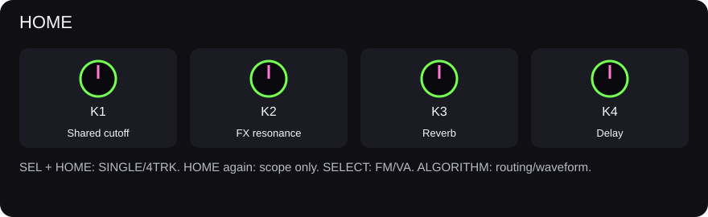
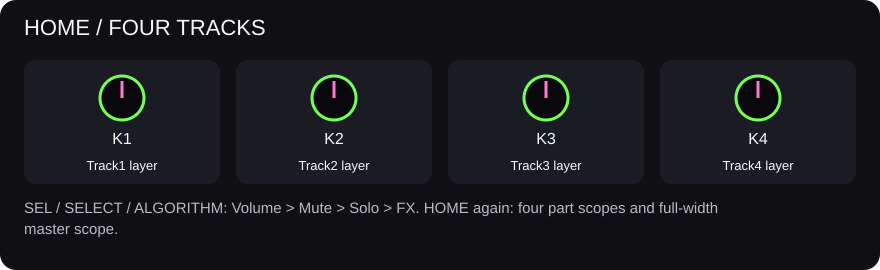


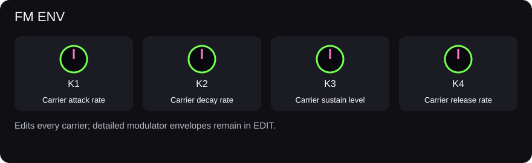
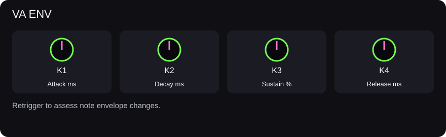
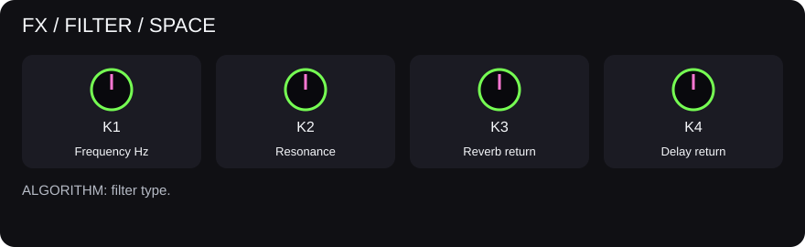
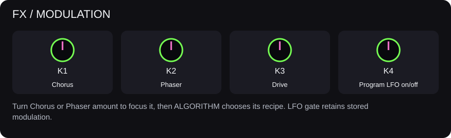
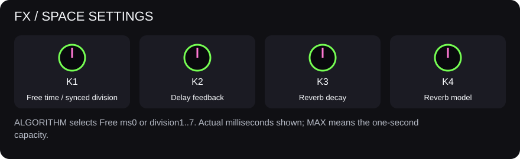
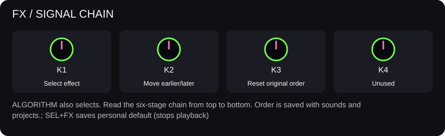
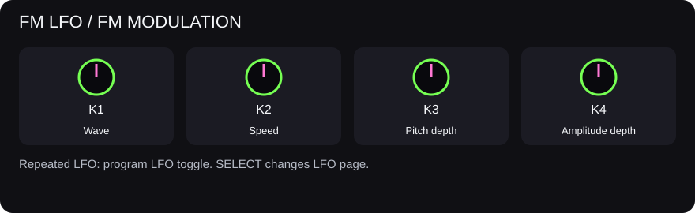
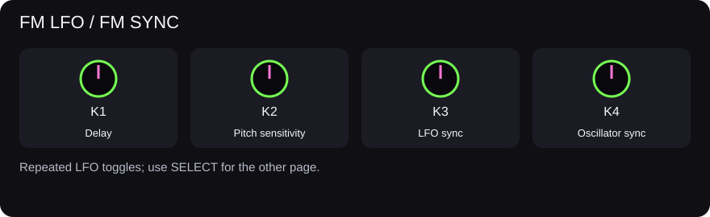
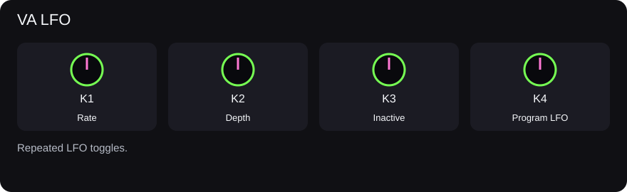
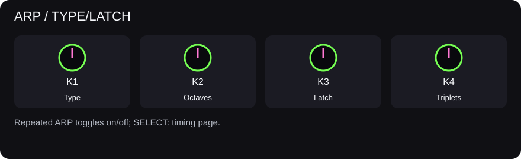
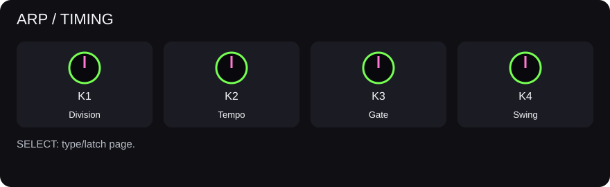
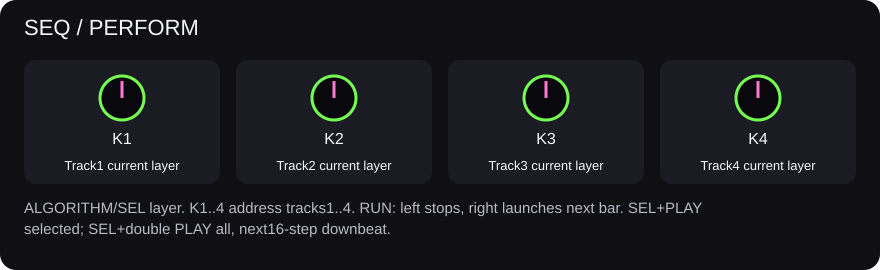
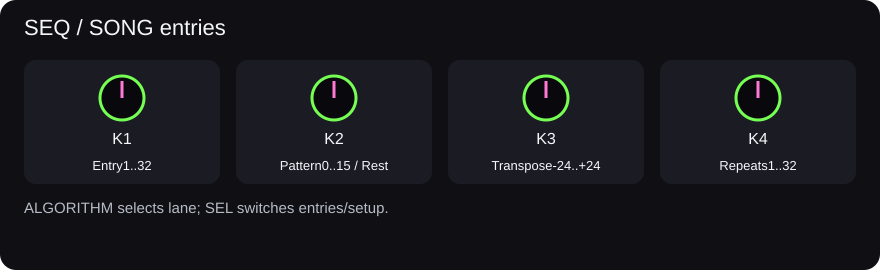
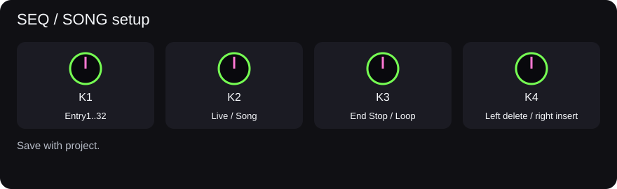
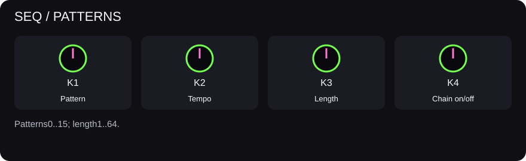
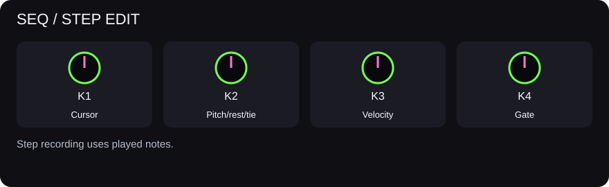
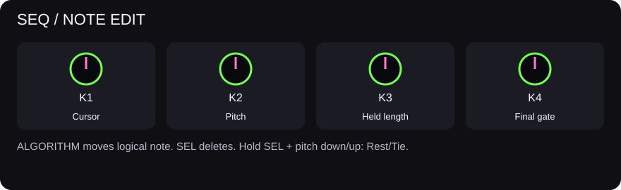
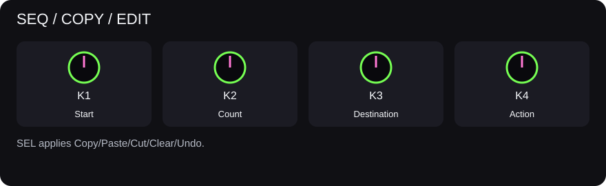
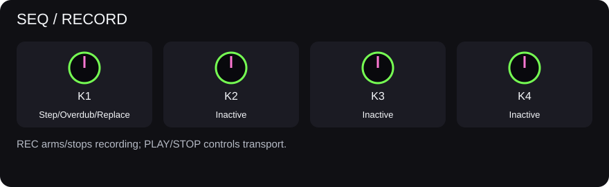
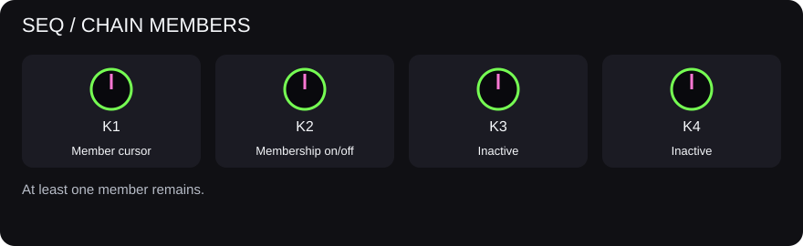
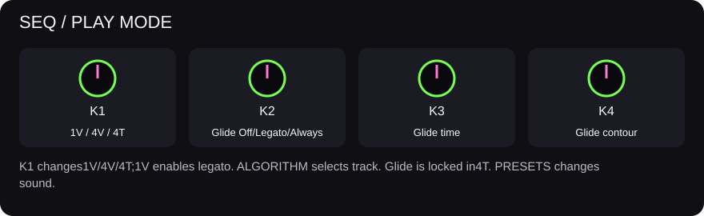
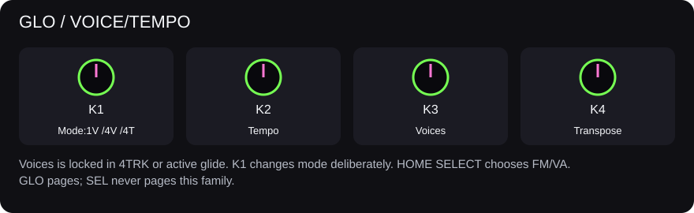
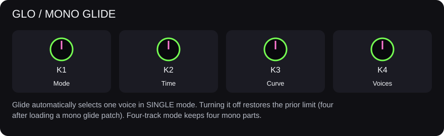


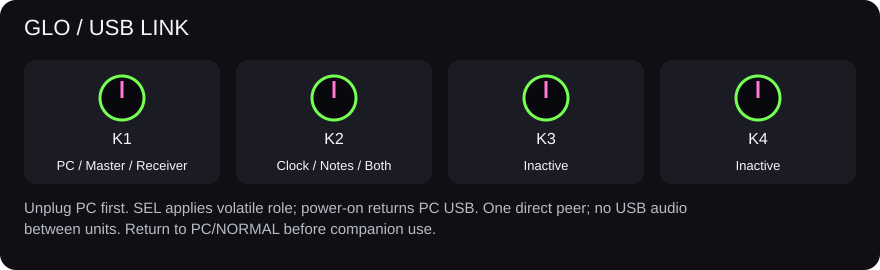
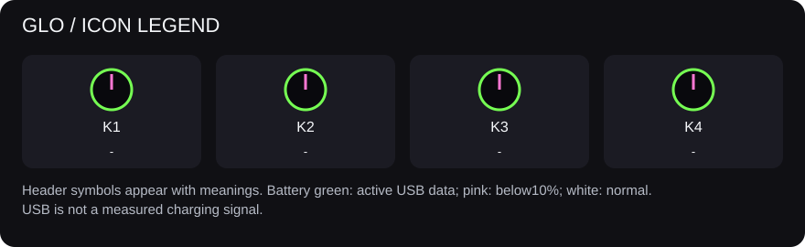
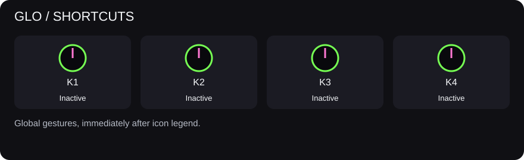
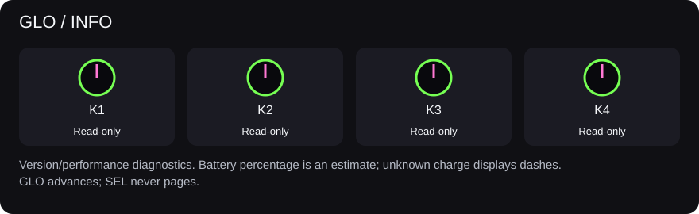
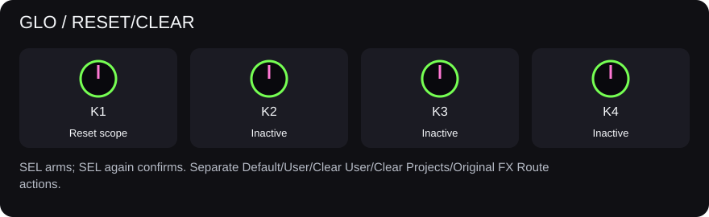